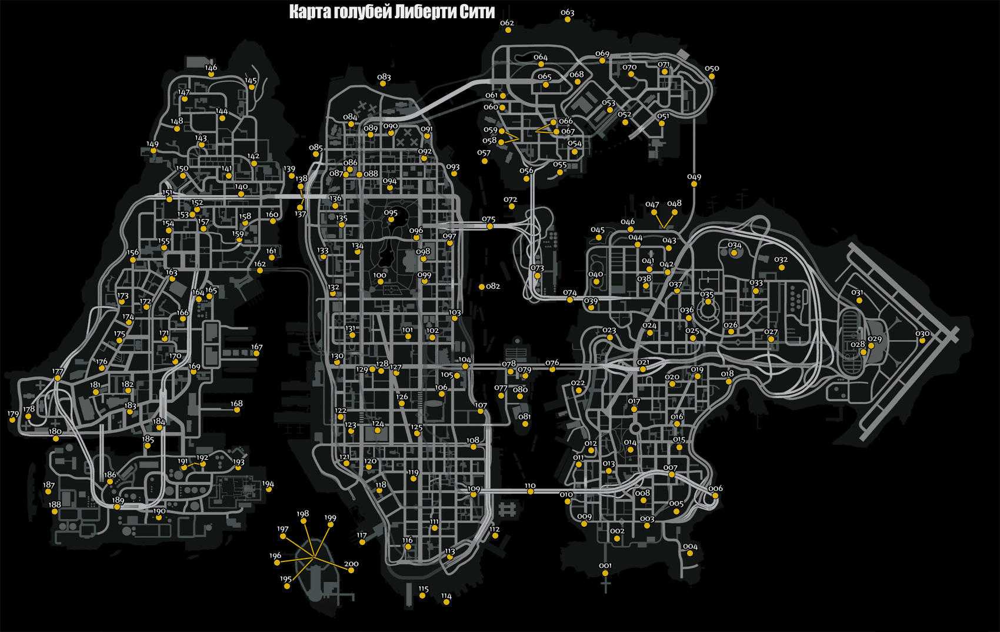

РАЗНОЕ КАРТА ГОЛУБЕЙ В GTA IV
Как известно, для того чтобы в GTA 4 набрать 100% прохождения, необходимо не только пройти основную сюжетную линию. Помимо этого, например, Rockstar предлагают игрокам убить 200 голубей, охотясь за ними по всему Либерти Сити.
Ниже представлена карта голубей по которой вы можете убить всех 200 голубей.
